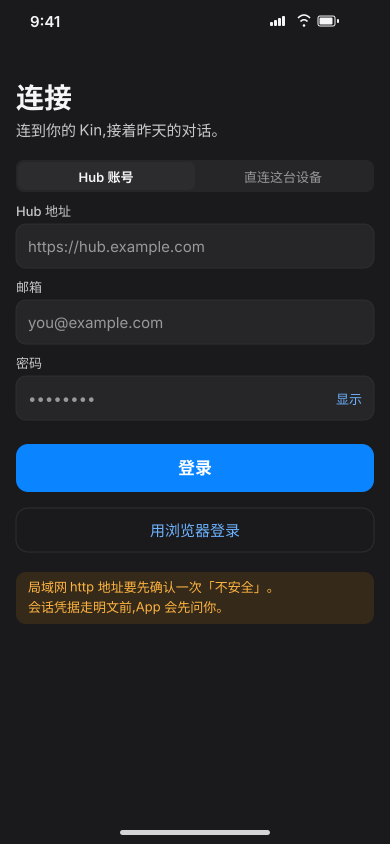
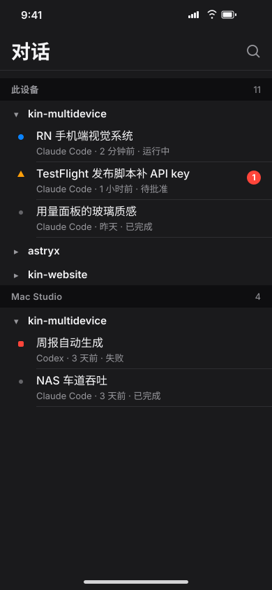
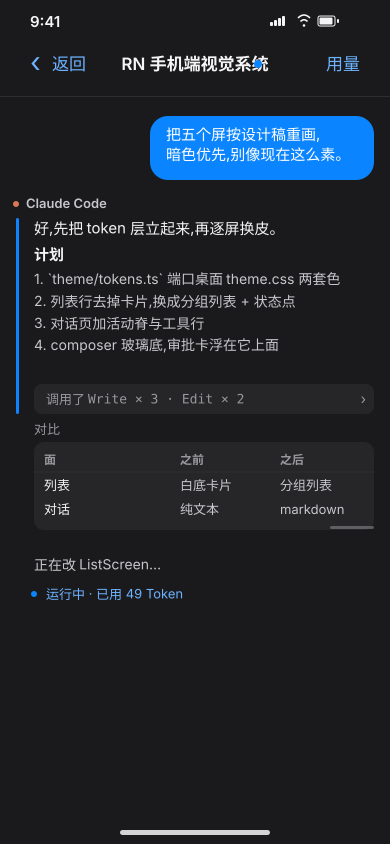
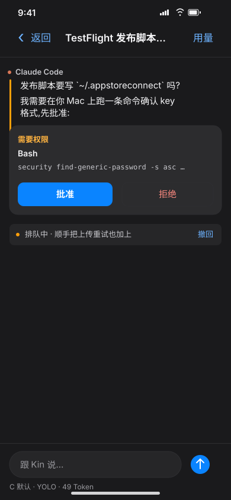
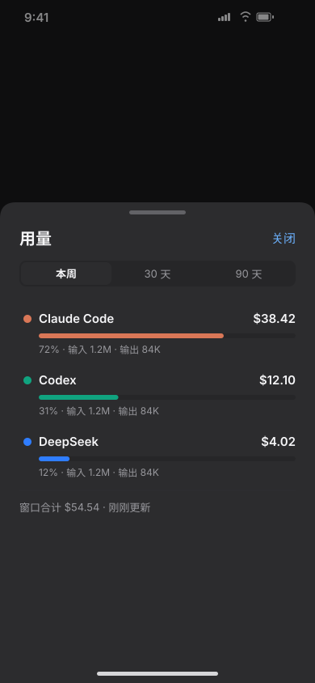
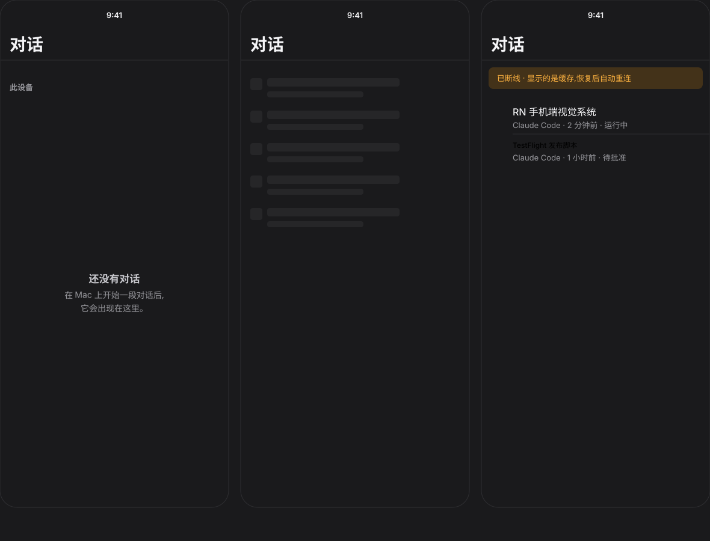

KIN-MOBILE-002 · RN 手机端视觉系统五屏重画：连接、列表、对话、composer 与审批、用量
一句话：当我把 RN 版 Kin 装上手机 dogfood，我想它是一个认真设计的手机应用——暗色正确、列表像 iOS、对话能读 markdown——而不是默认样式的文本行，以便我愿意每天打开它。
怎么审
- 先看切法：这条只管"换皮"，行为一格不动。
- 再看每一屏：先看帧，再读帧下六段用户流程。帧是暗色模式；浅色用同一套 token 的反侧，token 表在「决定 D1」。
- 最后回决定：每条都有推荐和代价；页尾有回复模板。
都同意就回「全部同意」；有修改就回「D2 改成…」。帧在卡片内可左右滑，页面本身不横滚。
MECE：这条故事切在哪
KIN-MOBILE-001 把行为搬上 RN（已签、在飞）；这条把"皮"补上，行为一格不动。
- 为什么单独一条：视觉系统是一个独立意图——"它看起来像个正经应用"。行为合同已经在 001 签过，混进去会把签字变成既签行为又签审美。
- 为什么不并进 001：001 的范围明文"不重新设计任何屏幕"；本条正是那次推迟的设计本身。
- 不在这一条：底部 tab bar（只有一个一级页，没有可切的对象）、新建对话入口、推送、Android、web/桌面任何改动。
- 大小：5 屏 + token 层；一次交付。
现在 → 之后
现在（dogfood 实测）
- 没有 token 模块，113 处颜色字面量散落组件里；浅色固定，暗色模式下是错的
- 列表是白底卡片行；markdown 不渲染，列表显示成
-原文，表格溢出 - composer 是裸输入框；审批是平铺文字
- 局域网 http 的 Hub 直接拒绝，连不上就是连不上
之后
- token 端口桌面
theme.css明暗两套，web 改色手机测试立刻红 - iOS 分组列表 + 状态双编码；markdown 正文、活动脊、横滚表格
- 玻璃 composer、审批卡浮在它上方、一屏一个实心主按钮
- 局域网 http 显式确认一次后可连
界面
帧为暗色模式 390×844；帧内文字是设计占位，不是真实数据。每帧下是六段用户流程。
1 · 连接：两条路进同一扇门

- 起点刚装好或会话过期；屏幕是连接页，不是列表空态
- 动作选「Hub 账号」或「直连这台设备」；Hub 路填地址/邮箱/密码，或点「用浏览器登录」
- 立刻看到按下即转圈；成功直落列表，密码框支持系统密码自动填充
- 慢·空·失败·断线失败分清「凭据错误 / 地址不可达 / 不是 https」；局域网 http 先弹一次「不安全」确认（帧底橙条），确认后才连——这解除现在连不上局域网 Hub 的阻塞
- 键盘与焦点键盘弹出时登录按钮不被遮；密码框可「显示」；错误后焦点回输入框并读出原因
- 离开再回来凭据进 Keychain（行为不变）；记住上次选的分段与 Hub 地址
2 · 列表：iOS 分组列表，状态用形状+颜色双编码

- 起点已连接，落在列表；大标题「对话」滚动时收成导航条标题
- 动作扫行、展开项目、点搜索、点一行
- 立刻看到待批 = 橙三角 + 红计数 pill，最先被看到；运行中 = 蓝点；失败 = 红方块；完成 = 灰点。不靠颜色单独表达——形状也不同
- 慢·空·失败·断线慢：骨架条（帧 6 中）；空：「还没有对话 / 在 Mac 上开始一段对话后，它会出现在这里」；断线：顶部橙横幅，已加载行保留
- 键盘与焦点整行是触控区，行高 54pt；VoiceOver 读「标题 · agent · 时间 · 状态」
- 离开再回来折叠、滚动位置、搜索词保留（行为不变）
3 · 对话：活动脊 + 真正的 markdown

- 起点点开一条对话；导航条一行：返回 · 标题 · 运行中点 · 用量
- 动作滚动阅读；点工具行展开；表格左右滑
- 立刻看到每轮 agent 工作左缘一条 3pt 状态脊（蓝运行/绿完成/红失败/橙待批）——长对话只扫脊线；markdown 标题/列表/代码块/引用正常渲染；表格在 inset 组里横滚，不撑破屏
- 慢·空·失败·断线流式时脊蓝、底部「运行中 · 已用 N Token」；断线内容不丢（行为不变）
- 键盘与焦点新增文本不抢焦点；表格可聚焦读表头（行为不变）
- 离开再回来阅读位置保留（行为不变）
4 · composer 与审批：一屏一个实心主按钮

- 起点对话底部 composer；agent 提出一条审批
- 动作读命令、批准或拒绝；或继续输入发送
- 立刻看到审批卡浮在 composer 上方：命令 mono 完整可读，「批准」是全屏唯一实心主按钮、「拒绝」描边；批准后 success 触感一次、卡片变已处理；排队消息一行一条带「撤回」
- 慢·空·失败·断线提交中禁用重复点（行为不变）；失败恢复可操作并说明（行为不变）
- 键盘与焦点键盘弹出 composer 贴键盘上方（行为不变）；批准/拒绝读屏读出动作与对象
- 离开再回来草稿保留（行为不变）
5 · 用量 sheet：数字用表格数字

- 起点对话头「用量」
- 动作切窗口、读 provider 占比、下拉关闭
- 立刻看到sheet 从底部推出，背景压暗；provider 行 = 身份色点 + 占比条 + 金额（tabular figures，不换行跳动）
- 慢·空·失败·断线骨架/空态/失败保留上次值并标记（行为不变）
- 键盘与焦点焦点进 sheet 标题，关闭回到「用量」（行为不变）
- 离开再回来窗口选择保留（行为不变）
6 · 状态三联：空 / 加载 / 断线

空态文案不道歉、给下一步；骨架条按列表行形；断线横幅橙色、不挡行、说清「显示的是缓存」。失败态沿用 KIN-MOBILE-001 已签帧，本条不重复画。
状态覆盖
决定
D1 · token 端口桌面 theme.css，明暗两套，parity 测试兜底
推荐：同意。mobile-rn/src/theme/tokens.ts 逐值端口 ui/src/design/theme.css（含注释里的对比度结论），一条测试读 css 原文比对，web 改色手机端立刻红。
代价：手机端没有独立配色权——但这正是目的（一个产品一套语言）。备选"手机单独设计一套"会再制造一次 drift，且桌面那套每个值都量过对比度，重做的成本是重新量一遍。
D2 · 不上底部 tab bar
推荐：同意。RN 只有一个一级页（列表）；用量是 sheet、审批在对话流里。D8 的四个入口等例行任务/运维真的进了 RN 再加玻璃底栏。
代价：与 web 手机壳的四入口不一致——但 web 那四个面 RN 里三个还不存在，放空 tab 是更大的违背。
D3 · 局域网 http Hub：显式确认一次后可连
推荐：同意。现在 normalizeHubOrigin 直接拒绝非回环 http，你的局域网 Hub（192.168.x）根本连不上。改成：http 非回环先出「不安全」确认（说明凭据走明文），确认一次记住该地址。
代价：明文内网凭据的理论风险——但网络是你自己的局域网，且旧 Capacitor 版本来就是这个行为；不确认就放行是不可接受的中间态，所以是确认而不是放行。
D4 · markdown 自绘精简渲染器，不引库
推荐：同意。段落/标题/列表/代码块/表格横滚/引用，复用 shared 解析；约几百行。community markdown 库要么维护停滞要么依赖 web 布局假设，表格横滚正是它们最差的部分。
代价：不覆盖 markdown 全量语法（嵌套表格、脚注等稀有构造退化为纯文本）；以后要全量再引库，渲染器接口不变。
D5 · 新增三个 expo 官方依赖
推荐：同意。expo-haptics（批准反馈）、expo-symbols（SF Symbols 导航图标）、expo-glass-effect（iOS 26 液态玻璃条，旧系统回落已有的 expo-blur）。都是 expo 官方包、随 SDK 版本锁定。
代价：依赖表从 16 个变 19 个，ADR 0036 要加一行——CEO 循环已有 expo 依赖豁免先例。备选"不用图标全靠文字"在导航条上不可行（返回 chevron、搜索放大镜）。
签字
都同意就回「全部同意」，我把故事转 approved 并排进 RN 队列（R1 token 层先行，后续切片并行）。有修改直接写，例如「D4 改成引库」。
KIN-MOBILE-002 全部同意 （或：D1… D2… D3… D4… D5… 逐条写修改）